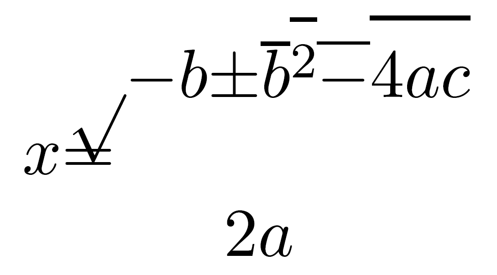
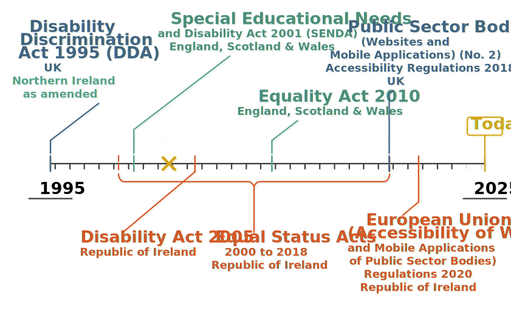
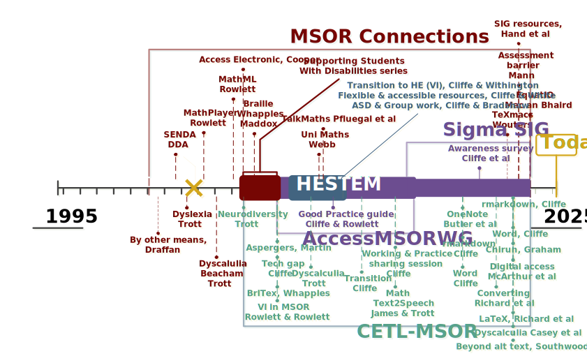
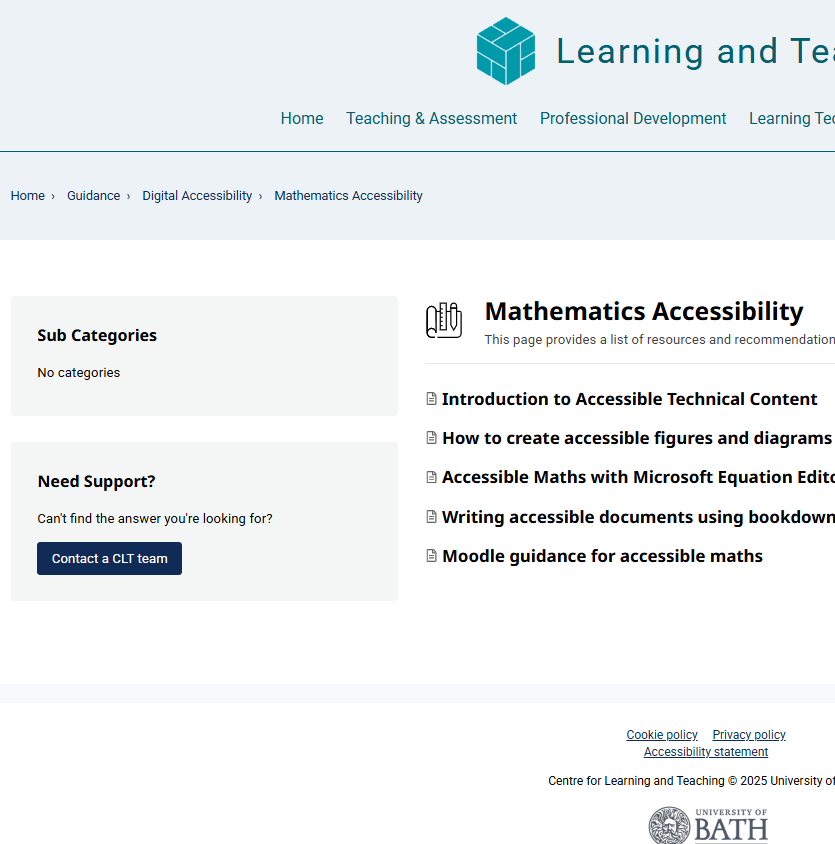
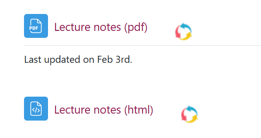
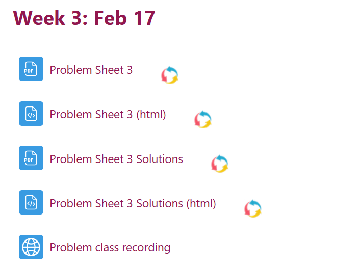
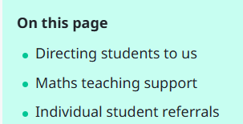
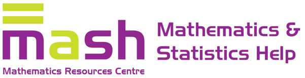
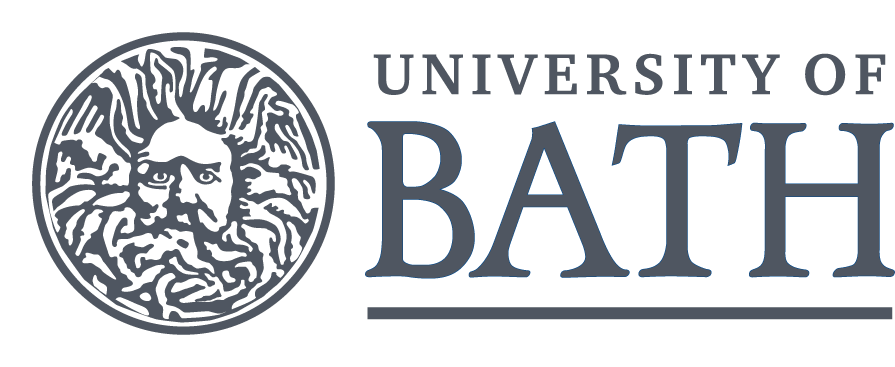

Technology enabled mathematical science education
Bridging Research and Practice
Abstract: This talk will explore key research and technological developments that have enabled access to mathematical resources for all students, including disabled students. We will examine the role of specialist practitioners in translating research and development outputs into practical methods for the average mathematics lecturer, contributing to changes in everyday practices. We will review remaining core technical access issues and discuss how our community can effectively respond to these challenges, using two specific examples to guide our conversation.
Enabling access
Defining the problem
We want…
… to enable access to mathematical content by:
- People using assistive technology
- People reading on small screen devices, e-book readers…
- People searching, copying and pasting
- People verifying reproducibility of results
- Software parsing, transforming, generating and manipulating input and output
- AIs consuming and generating mathematical content…?
But…

Legal

From research to practice
Technical

Practitioners

Phases

Change
CLT & Lecturers



MASH & Everyone!
Maths support

MathJax
\[ x = \frac{-b \pm \sqrt{b^2-4ac}}{2a} \]
What next?
Dissemination and core challenges
Getting started…
- RMarkdown, Bookdown and possibly ClavertonDown
- Quarto
- Chirun
- LWarp
- PreTeXt
- Word
- Desmos and Geogebra
- BrailleR
Dissemination
We are still doing this, now others are too… Can you:
- Have a go yourself and tell others?
- Join JISC Accessibility Community Maths Working Group
- Consider and communicate regarding the implications for mathematical pedagogy?
- Consider and communicate regarding the implications for open and reproducible science?
- Build functionality into software and packages you create so that users automatically produce accessible output?
Diagrams
- It is possible to use Desmos, some functionality of Geogebra and the BrailleR package to help make accessible diagrams
- This is nowhere near sufficient or flexible enough to represent the variety of diagrams we produce in e.g. TikZ
- These formats are not easily consumed and manipulated by other software or AIs
Meaning
- We are no longer losing syntactic structure
- We are still losing enough of the semantics known to the author that things we want to do are affected
- Sometimes the author encodes these in their LaTeX
- Not always though…
- Consider \[ \lvert\{(a,b) \mid a \in A, b \in B\}\rvert \]
Questions and discussion
Thank you for your time! Papers for discussion:
- Authoring Web-accessible Mathematical Diagrams.
- Author Intent: Eliminating Ambiguity in MathML., Pre-print
Slides: https://ehcliffe.github.io/TEMSE2025/
My email address: E.H.Cliffe@bath.ac.uk

